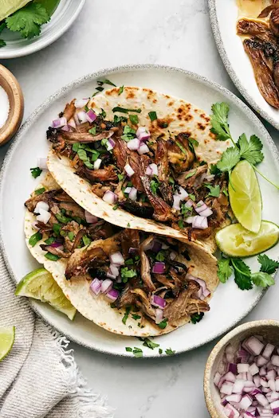
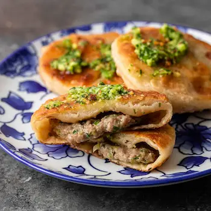
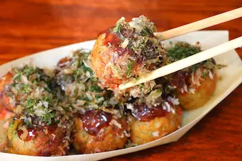

Carnitas Tacos
Simply wrap juicy shredded pork in a warm tortilla, then top it with freshly diced onion, cilantro, and a squeeze of fresh lime juice.

Xian Bing
Xian Bing or Jianbing is a beloved street breakfast in China. Its main ingredients include a batter made from wheat and grain flour, eggs, and various sauces. The batter is quickly cooked on a large frying pan or a specialized flat hotplate.

Takoyaki
Takoyaki, meaning "grilled octopus," is a dish made from a wheat batter with a filling, typically octopus or another type of seafood. The batter is cooked in pans with small half-dome compartments and flipped to achieve its round shape.